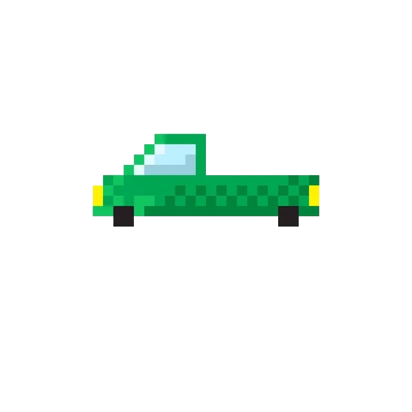

RBC Counter
Used image analysis in blood smear images to enable the serparation (segmentation) of RBC's from WBC's from the abckground to create a rudimentary blood cell counter.
2023
2023

Self-Parking RC Car
The goal of this project was to take process of parallel parking away form the drive and into an automated IR based system.
2022

2022
ECG Analysis
Used an IWorx recorder and electrodes to test effectiveness of breathing techniques on lowering heartrate.
2023
2023
Commercial Liquid Filter
Engineered a cartridge containing treated wood and carbon to be used to futher eliminate 95% of micro-plastics and heavy metals from water.
2023
2023
Stock Backtester
A python framework for testing the ability of algorithms in the stock market.
2024
Protein Classifier
Developed a Long Short-term Memory deep learning model using Keras in Python to classify proteins.
2023
2023